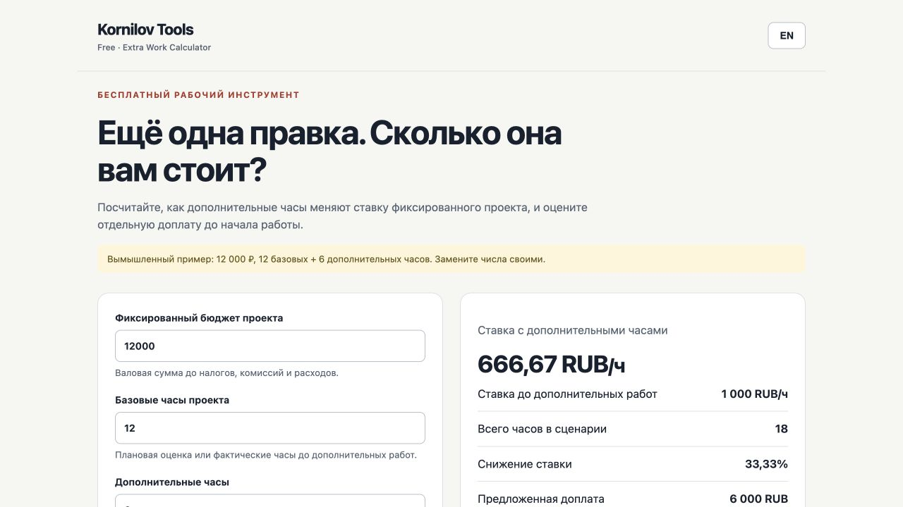

Extra Work Calculator
Узнайте, сколько стоят дополнительные правки.
Дополнительные часы, фактическая ставка и сумма для обсуждения с клиентом.
Учебный проект: лендинг
Ещё один фильтр в галерее
Отправлено на согласование. В бюджет ещё не включено.
Демонстрационный пример. Все проекты, люди и числа вымышлены.
Кому подойдёт
Для фрилансера, который согласовал фиксированный бюджет, а затем получил новые пожелания.
Что внутри
- Бюджет, плановые и дополнительные часы
- Расчёт валовой часовой ставки до и после правок
- Предлагаемая доплата и текстовый результат
- Пример, RU/EN и работа в браузере

Как это работает
Откройте бесплатную веб-версию прямо здесь. Для работы без подключения скачайте ZIP на Boosty, распакуйте папку и откройте index.html. Основной сценарий — браузер на компьютере.
Скачать ZIP на BoostyКак можно использовать
Можно использовать для личной и коммерческой работы, свободно делиться своими расчётами. Условия распространения самого инструмента — в лицензии.
Полная лицензияБесплатный доступ
Браузерная версия бесплатна: покупка и подписка не требуются. Для автономной работы используйте ZIP из бесплатного поста Boosty. Платные инструменты из каталога приобретаются отдельно.
Поддержка и обновления
Вопрос по файлам или работе инструмента? Напишите автору в личные сообщения Boosty. Укажите название, версию и браузер. Список изменений поставляется в ZIP; доступные версии размещаются в бесплатном посте.